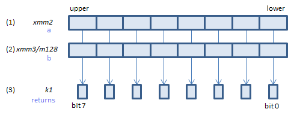
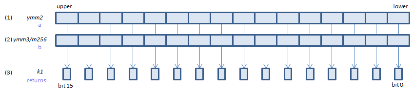
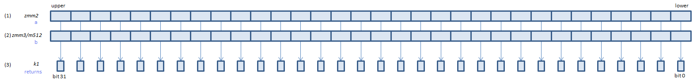

VPCMPW - Packed CoMPare Word (imm8=2)
VPCMPW k1{k2}, xmm2, xmm3/m128, 2 (V5+BW+VL
__mmask8 _mm_cmple_epi16_mask(__m128i a, __m128i b)
__mmask8 _mm_mask_cmple_epi16_mask(__mmask8 k2, __m128i a, __m128i b)

For each signed WORD, if (1) <= (2) set 1, else set 0, to the corresponding bit of (3).
If k2 bit is 0, the comparison is not done and the corresponding bit of (3) is set to zero. Upper bits of (3) are zero cleared.
VPCMPW k1{k2}, ymm2, ymm3/m256, 2 (V5+BW+VL
__mmask16 _mm256_cmple_epi16_mask(__m256i a, __m256i b)
__mmask16 _mm256_mask_cmple_epi16_mask(__mmask16 k2, __m256i a, __m256i b)

For each signed WORD, if (1) <= (2) set 1, else set 0, to the corresponding bit of (3).
If k2 bit is 0, the comparison is not done and the corresponding bit of (3) is set to zero. Upper bits of (3) are zero cleared.
VPCMPW k1{k2}, zmm2, zmm3/m512, 2 (V5+BW
__mmask32 _mm512_cmple_epi16_mask(__m512i a, __m512i b)
__mmask32 _mm512_mask_cmple_epi16_mask(__mmask32 k2, __m512i a, __m512i b)

For each signed WORD, if (1) <= (2) set 1, else set 0, to the corresponding bit of (3).
If k2 bit is 0, the comparison is not done and the corresponding bit of (3) is set to zero. Upper bits of (3) are zero cleared.
x86/x64 SIMD Instruction List
Feedback